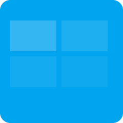

Arquitectura del Computador
Definición: La arquitectura del computador explica cómo se organiza el hardware y cómo se comunican los componentes para ejecutar instrucciones.
Historia: Surgió con las primeras máquinas de von Neumann y evolucionó hacia sistemas paralelos y arquitecturas multicore.
Importancia: Determina rendimiento, eficiencia y escalabilidad de los sistemas.
Componentes claves
CPU, memoria, almacenamiento, tarjeta gráfica y buses forman el esqueleto de un computador. Cada componente aporta funciones específicas y requiere coordinación precisa.
Función de cada componente
- CPU: Ejecuta instrucciones y controla operaciones.
- RAM: Almacena datos temporales y ejecutables.
- GPU: Procesa gráficos y cálculo paralelo.
- SSD/HDD: Almacenan datos de forma persistente.
Sistemas Operativos
Definición: Software que gestiona hardware, procesos y permisos. Actúa como intermediario entre aplicaciones y componentes físicos.
Funciones: planificación de CPU, memoria virtual, controladores y seguridad.
Windows
Amplia compatibilidad, entorno gráfico sólido y ecosistema empresarial.

Linux
Flexible, libre y poderoso en servidores y desarrollo. Ideal para administradores y programadores.
macOS
Sistema integrado con Apple, orientado a creatividad, estabilidad y experiencia de usuario.
Sistemas de Numeración
Decimal: Base 10, usado en la vida diaria. Binario: Base 2, base de la computación. Hexadecimal: Base 16, útil para direcciones y colores.
Ejemplo: 173₁₀ = 10101101₂. Convertir usando divisiones sucesivas y lectura de restos.